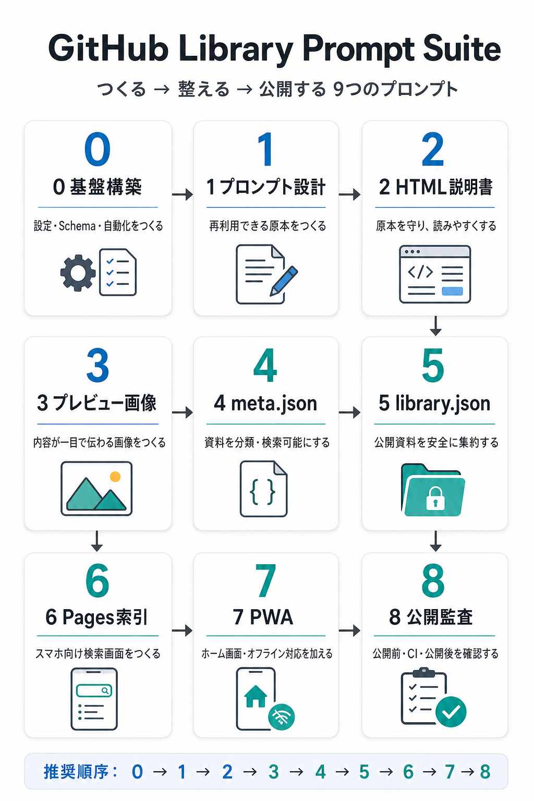

0
基盤構築
共通設定、JSON Schema、検証スクリプト、GitHub Actionsなど、ライブラリ全体の土台を作成・更新・監査します。
原本を開く →GitHub Library · Prompt Suite
My Libraryの基盤づくりから、原本・説明書・画像・メタデータ・索引・PWA・公開監査までを、役割ごとに分けたマスタープロンプト集です。
番号は推奨実行順です。初回は0から、日常的な資料追加は1〜5、公開画面の整備は6〜7、最後の確認は8を使います。

画像をタップすると単体で開き、拡大して確認できます。
共通設定、JSON Schema、検証スクリプト、GitHub Actionsなど、ライブラリ全体の土台を作成・更新・監査します。
原本を開く →目的、対象AI、入力、制約、成果物、検証を整理し、繰り返し使えるプロンプト原本を作成・改善します。
原本を開く →Markdown原本を変更せず、内容を段階的に読めるAndroid向け単一HTML説明書へ変換します。
原本を開く →内容に合う視覚表現を自動選択し、スマートフォンで一目理解できるプレビュー1案を設計・生成します。
原本を開く →資料単位のID、分類、要約、検索語、公開状態、ファイル参照、派生物の鮮度を記録・監査します。
原本を開く →公開条件を満たす資料だけを抽出し、古い派生物を除外しながら決定的な索引データへ集約します。
原本を開く →library.jsonを読み込み、検索・分類・並べ替え・404導線を備えたAndroid優先の閲覧画面を作ります。
既存サイトを壊さず、ホーム画面起動、オフライン表示、更新通知などのPWA機能を追加・監査します。
原本を開く →公開前、CI、公開後に、構造・公開制御・JSON・リンク・HTML・スマホ表示・PWA・秘密情報を確認します。
原本を開く →meta.jsonは構造、library.jsonは集約索引という役割分担です。| 番号 | 主な入力 | 主な成果物 | 使う時期 |
|---|---|---|---|
| 0 | 既存リポジトリ、カテゴリ | 設定、Schema、スクリプト、Actions | 初期構築・基盤変更 |
| 1 | 目的、素材、既存プロンプト | Markdown原本 | 資料作成の最初 |
| 2 | Markdown原本 | HTML説明書 | 閲覧版の作成・更新 |
| 3 | 原本または説明書 | プレビュー画像、alt情報 | 一覧で見分けたいとき |
| 4 | 資料一式 | meta.json | 分類・公開設定 |
| 5 | 複数のmeta.json | library.json | 索引データ更新 |
| 6 | library.json | index.html、404.html | 表示・検索UI変更 |
| 7 | 公開サイト一式 | manifest、service worker等 | PWA追加・更新 |
| 8 | 公開予定一式、公開URL | 監査結果、必要な安全修正 | 公開前・公開後 |